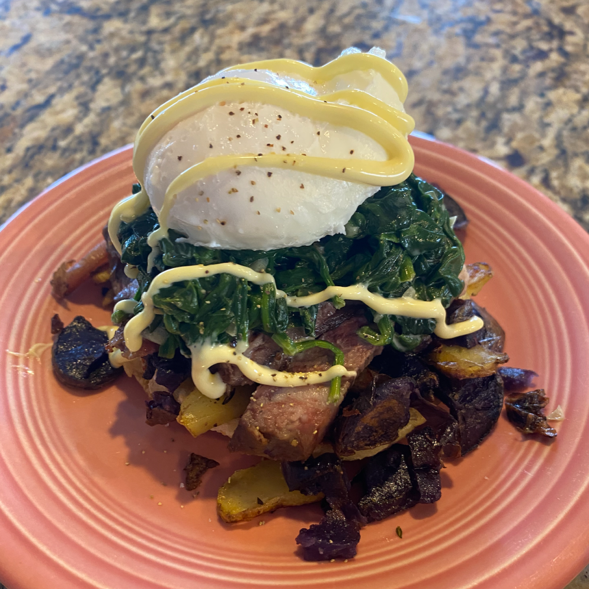

< Back
Steak and Spinach Benny

Description
Tender steak and mushrooms adds an earthy flavor to this eggs benedict.
Ingredients
- 1 Large Egg
- 1 English Muffin
- 1/8C Cooked Spinach
- 6 Strips of Cooked Steak
- 1/2C Spinach
- 1T Kewpie Mayonaise
- Salt and pepper to season
Steps
- Cook that steak.
- Sautee that spinach.
- Sautee those mushrooms.
- Poach that egg.
- Toast that english muffin.
- Avengers assemble.
- Dole out the kewpie mayonaise.
- Sprinkle that salt and that pepper.